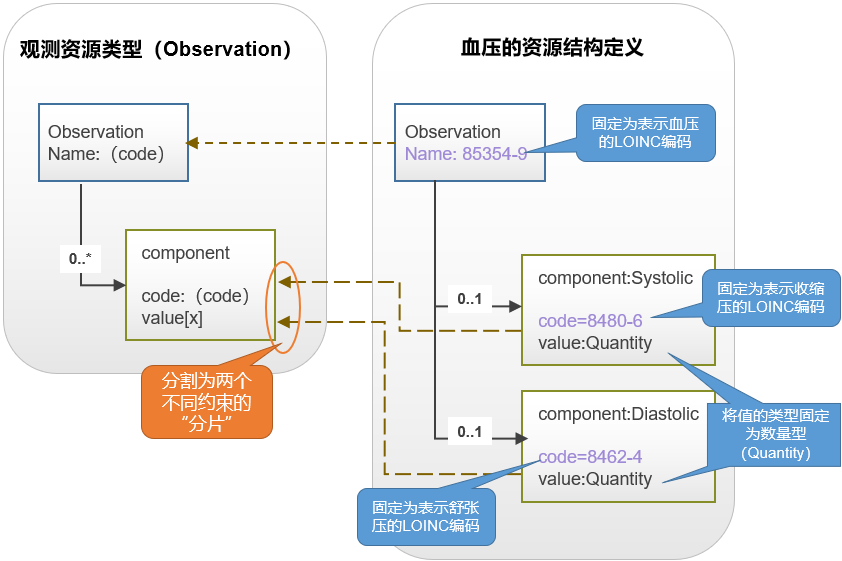

当前位置： 符合性
当前位置： 符合性- 配置FHIR
当前位置： 符合性工作组: FHIR Infrastructure  | 成熟度: Normative | 标准状态: Normative |
The base FHIR specification (this specification) describes a set of base resources, frameworks and APIs that are used in many different contexts in healthcare. However, there is wide variability between jurisdictions and across the healthcare ecosystem around practices, requirements, regulations, education and what actions are feasible and/or beneficial.
For this reason, the FHIR specification is a "platform specification" - it creates a common platform or foundation on which a variety of different solutions are implemented. As a consequence, this specification usually requires further adaptation to particular contexts of use. Typically, these adaptations specify:
Note that because of the nature of the healthcare ecosystem, there may be multiple overlapping sets of adaptations - by healthcare domain, by country, by institution, and/or by vendor/implementation.
FHIR defines a cascade of artifacts for this purpose:
| Artifact | Description | US Core example |
| Implementation Guide (IG) | A coherent and bounded set of adaptations that are published as a single unit. Validation occurs within the context of the Implementation Guide | US Core IG |
| Package | A group of related adaptations that are published as a group within an Implementation Guide | US Core Capability Statements |
| Conformance Resource | A single resource in a package that makes rules about how an implementation works. These are described below | DAF Problem Value Set |
| Profile | A set of constraints on a resource represented as a structure definition with kind = constraint |
DAF Medication Request |
The verb 'profile', or 'profiling', is used to describe the process of creating a profile.
Typically, Implementation Guides both restrict and extend APIs, resources and terminologies. FHIR provides a set of resources that can be used to represent and share the decisions that have been made, and allows implementers to build useful services from them. These resources are known as the conformance resources. These conformance resources allow implementers to:
These resources need to be used as discussed below, and also following the basic concepts for extension that are described in "Extensibility". For implementer convenience, the specification itself publishes its base definitions using these same resources.
The CapabilityStatement resource describes two different uses for profiles on resources: Resource Profiles and Supported Profiles. Resource Profiles are specified using the CapabilityStatement.rest.resource.profile element and Supported Profiles are specified using the CapabilityStatement.rest.resource.supportedProfile element.
These profiles describe the general features that are supported by the system for each kind of resource. Typically, this is the superset of all the different use-cases implemented by the system. This is a resource-level perspective of a system's functionality.
These profiles describe the information handled/produced by the system on a per use case basis. Some examples of the uses for these kind of profiles:
These profiles represent different use cases leading to handling resources of the type indicated by the CapabilityStatement.rest.resource.type differently. For instance:
For a producer system and a consumer system to exchange data successfully based on one of these supported profiles, it is not enough to know that the systems happen to have profiles that overlap for the use case of interest; the consumer must be able to filter the total set of resources made available by the producer system and deal only with the ones relevant to the use case.
As an example, consider a laboratory system generating thousands of reports a day. 1% of those reports are a particular endocrine report that a decision support system knows how to process. Both systems declare that they support the particular endocrine report profile, but how does the decision support system actually find the endocrine reports that it knows how to process?
One possible option is for the decision support system to receive every single
report coming from the lab system, check whether it conforms to the
profile or not, and then decide whether to process it. Checking whether
a resource conforms to a particular profile or not is a straight
forward operation (one option is to use the provided tools for this),
but this is a very inefficient way - the decision support system has to receive
and process 100 times as many resources as it uses. To help a consumer
find the correct set of reports for a use-case, a producer of
resources also SHALL, for any profile declared in CapabilityStatement.rest.resource.supportedProfile:
Beyond these requirements, a producer of resources SHOULD ensure that any resource instance that would reasonably be expected to conform to the declared profiles SHOULD be published in this form.
Trial-Use Note: There are many uninvestigated issues associated with this use of profiles. HL7 is actively seeking feedback from users who experiment in this area, and users should be prepared for changes to features and obligations in this area in the future.
Feedback is welcome here
A CapabilityStatement resource lists the REST interactions (read, update, search, etc.) that a server provides or that a client uses, along with some supporting information for each. It can also be used to define a set of desired behaviors (e.g. as part of a specification or a Request for Proposal). The only interaction that servers are required to support is the capabilities interaction itself - to retrieve the server's CapabilityStatement. Beyond that, servers and clients support and use whichever API calls are relevant to their use case.
In addition to the operations that FHIR provides, servers may provide additional operations that are not part of the FHIR specification. Implementers can safely do this by appending a custom operation name prefixed with '$' to an existing FHIR URL, as the Operations framework does. The Conformance resource supports defining what OperationDefinitions make use of particular names on an end-point. If services are defined that are not declared using OperationDefinition, it may be appropriate to use longer names, reducing the chance of collision (and confusion) with services declared by other interfaces. The base specification will never define operation names with a "." (period) in them, so implementers are recommended to use some appropriate prefix in their names (such as "ihe.someService") to reduce the likelihood of name conflicts.
Implementations are encouraged, but not required, to define operations using the standard FHIR operations framework - that is, to declare the operations using the OperationDefinition resource, but some operations may involve formats that can't be described that way.
Implementations are also able to extend the FHIR API using additional content types. For instance, it might be useful to read or update the appointment resources using a vCard based format. vCard defines its own mime type, and these additional mime types can safely be used in addition to those defined in this specification.
Extending and restricting resources (collectively known as 'profiling a resource') is done with a "StructureDefinition" resource, which is a statement of rules about how the elements in a resource are used, and where extensions are used in a resource.
One key function of profiles is to change the cardinality of an element. A profile can restrict the cardinality of an element within the limits of the base structure it is constraining. This table summarizes what types of restrictions are allowed:
| derived (across) base (down) | 0..0 (Not used) | 0..1 (optional) | 0..n (optional, many) | 1..1 (required) | 1..n (at least 1) |
| 0..1 | yes | yes | no | yes | no |
| 0..* | yes | yes | yes | yes | yes |
| 1..1 | no | no | no | yes | no |
| 1..* | no | no | no | yes | yes |
When a profile is constraining another profile where there are more cardinality options (e.g. low is not just 0 or 1, and high is not just 1 or *), the same principles still apply: the constraining profile can only allow what the base profile allows.
Note that though a profile can constrain an element from x..* to x..1, this doesn't make any difference to the representation in the JSON format - the element will still be represented in an array. As an example, take Patient.name which has a cardinality of 0..*. In an unprofiled Patient, this will be represented as:
{
"resourceType" : "Patient",
"name" : [{
"text" : "Peter James"
}]
}
Even if a profile is created on the resource that narrows the cardinality to 1..1, applications will still process the resource without knowledge of the profile. For this reason the representation will still be the same.
结构定义用于约束现有资源和数据类型时，有以下限制：
这样就意味着如果适配定义强制约束一个不能忽略的扩展，那么它还必须强制使用限定扩展（域资源的modifierExtension元素）。 意即，必须在实例中显式的定义而不能隐式的进行适配定义。
As an example, if a profile wished to describe that a Procedure resource was being negated (e.g. asserting that it never happened), it could not simply say in the profile itself that this is what the resource means; instead, the profile must say that the resource must have an extension that represents this knowledge.
There is a facility to mark resources to indicate that they can only be safely understood by a process that is aware of and understands a set of published rules. For more information, see Restricted Understanding of Resources.
A "constraint" StructureDefinition specifies a set of restrictions on the content of a FHIR resource or data type, or an additional set of constraints on an existing profile. A given structure definition is identified by its canonical URL, which SHOULD be the URL at which it is published. The following kinds of statements can be made about how an element is used, using a series of Element Definitions:
or HL7 v3 ) for the resource when used in a particular contextAny changed definitions SHALL be restrictions that are consistent with the rules defined in the resource in the FHIR Specification from which the profile is derived. Note that some of these restrictions can be enforced by tooling (and are by the FHIR tooling), but others (e.g. alignment of changes to descriptive text) cannot be automatically enforced.
Note that structure definitions cannot 'remove' mappings and constraints that are defined in the base structure, but for purposes of clarity, they can refrain from repeating them.
A structure definition contains a linear list of element definitions. The inherent nested structure of the elements is derived from the path value of each element. For instance, a sequence of the element paths like this:
defines the following structure:
<Root>
<childA>
<grandChild1/>
</childA>
<childB/>
</Root>
or its JSON equivalent. The structure is coherent - children are never implied, and the path statements are always in order. The element list is a linear list rather than being explicitly nested because element definitions are frequently re-used in multiple places within a single definition, and this re-use is easier with a flat structure.
结构定义资源（StructureDefinitions）中可能包含差异视图（differential）和/或完整视图（snapshot）。
差异视图（differential）是对比其约束的基结构定义（baseDefinition，通常是FHIR原生资源类型或数据类型），描述二者不同之处。 例如，一个资源结构定义文件将一个元素的基数强制约束为1..1。此时，其差异视图中只会有这个元素，且元素的路径被设置为强制要求，同时描述了其基数的要求。 除了这些信息之外，其余的结构信息都是隐式的继承其基结构定义。这意味着差异视图可能十分精炼，它只提及已更改的元素，而不会列出完整的结构。包括根元素在内的其它元素均不会在精炼的差异视图中体现。
请注意，差异视图对可选元素处理有两种方案。一是不对其进行约束。这样可以提高与其它资源结构定义文件之间的兼容性，但这样会在具体实现时付出更多工作。二是将其基数约束为0（max cardinality=0），即，不允许元素出现。这使得实现更容易，但也降低了它的适合范围。
必须结合基结构定义才能“正确理解”差异视图,即:通过$snapshot操作方法计算出完整的资源结构。这种方式不仅计算量大，而且当基结构（通过URL获取）不可访问时，就无法获取完整的资源结构信息。因此，结构定义资源（StructureDefinitions）还能自带一个完整视图（snapshot），它不依赖于任何其它资源结构，是一个计算后得到的完整资源结构形式。FHIR项目这主流平台提供了一些利用差异视图生成简要说明的工具，这些工具生成的简要说明非常完整与详细，但它们不支持让映射（mapping ）和约束（constraint）失效，即基资源结构的映射和约束会强制继承在简要说明中。
结构定义资源（StructureDefinitions）可以包含差异视图（differential）和简要说明（snapshot）两种视图。这两种视图的用途偏向不同：差异视图适合在编写结构定义的过程中使用，而简要说明更多用于编辑工具实现。 在运行的系统中使用结构定义资源时，应始终带有简要说明。
对结构定义资源（StructureDefinitions）进行约束时，有一种常见情况：将某个可能多次重复出现的元素（比如一个基数为0……*的列表）分割为一系列的子列表，每个子列表对其包含元素的约束限制都不同，并且每个子列表都有自己的附加含义。在FHIR中，此操作称为对列表的“约束分割（Slicing）”。将列表“分割”为子列表后，为了有效地对列表中的每个元素施加个性化的约束，通常每个子列表中只包含一个元素。这样就可以把每个包含一个元素的列表，看成是一个具有个性意义的“约束片”。
下图的示例展示了分片约束的过程：
在本示例中，基资源结构是观测资源类型（Observation ），它定义了一个0……*的“component”元素来表示不同的观测指标。每个观测指标的编码和取值分别嵌套在“component”元素中的,code和value表示。这类观测资源的一个典型例子是血压测量，血压有两指标：收缩压和舒张压。
上图展示了将“component”元素列表分割为收缩压和舒张压两个“约束片”的概念过程。（注：为了避免混乱，血压的资源结构的“名称（name）”属性仅数字编码显示，真实场景中应使用完整的可编码概念CodeableConcept）。
示例中血压的结构定义将“component”元素列表拆分为两个子列表，一个子列表包含一个收缩压元素，另一个子列表包含一个舒张元素。子列表中元素的编码属性值都固定为其对应的LOINC代码，并且将元素的值类型属性有固定为数量类型（Quantity）。这个过程被称为“约束分割（Slicing）”，收缩压和舒张压被称为“约束片”。
请注意，交换资源时，通过约束分割对基结构定义的进一步约束并不会更改所交换的序列化格式。这意味着在结构定义文件中定义的名称（本例中为“systolic”等）永远不会用于交换数据（实例数据消息体）。资源实例如下所示：
<Observation>
...
<component>
<code {LOINC="8480-6"}/>
<value ...>
</component>
<component>
<code {LOINC="8462-4"}/>
<value ...>
</component>
</Observation>
系统需要用某些元素来区分不同的约束片，通过对元素的值的检测来定位约束。在本例中，为了确定“component”元素的第一个约束片与收缩压相对应，就通过检测资源中的“code”元素的来分辨。此时，code元素就称为“辨别字段”。
在一般情况下，系统可以通过检测“约束片”中元素的具体内容是否满足约束规则的要求来判定与具体项目的对应关系。但这要求处理器能够检查应用于约束片中的所有规则，并以深度优先的方式进行推测。这两项要求对于运行系统来说都相当的困难，对于在运行时生成代码的系统（例如根据结构定义自动计算的软件）来说就更是难上加难了。因此，FHIR提供一个更好的区分约束片的方法：被约束分割的元素可以指定一个或一组字段，用作区分约束片的“辨别字段”。
一旦指定了辨别字段，辨别字段中指定的元素的组合值将是唯一的，即在每个可能的约束片这些值的组合都会不同。这样应用程序可以容易地确定列表中的项目对应哪个约束片，甚至可以在运行时生成的代码中判定，例如使用switch/case语句。
当约束结构指定一个或多个辨别字段时，必须确保它在每个约束片中的可能值不同且不重叠，以便易于区分约束片。
每个辨别字段都是由一个类型和一个FHIRPath表达式组成的一对值。FHIRPath：如何找到辨别字段。类型：如何处理字段，辨别字段有五种不同的处理类型：
| 类型 | 如何处理 |
| value | 通过基本数据类型的元素值辨别。约束片中指定一个简单类型的元素作为辨别字段，此元素在每个约束片中的值都不同。 |
| pattern | 通过复杂数据类型的元素值辨别。约束片中指定一个复杂类型的元素作为辨别字段，此元素在每个约束片中的值都不同，可以通过ElementDefinition.pattern[x]的定义来测试。 |
| exists | 通过是否存某个元素辨别。约束片中指定一个元素作为辨别字段，在资源实例中可能存在此元素，也可能缺失此元素。 |
| type | 通过元素的类型辨别。约束片中指定多态类型元素[x]作为辨别字段，此元素在每个约束片中的采用的类型都不同。 |
| profile | 通过元素的结构定义辨别。约束片中指定一个元素作为辨别字段，通过测试此元素的实例值是否符合指定的结构定义来分区约束片。此时，约束片的路径值（elementDefinition.slicing.discriminator.path）对应元素的实例值的数据类型应该是StructureDefinition或ImplementationGuide。注意，如果约束片的路径值为resolve()函数，即，elementDefinition.slicing.discriminator.path设置为resolve()，就应该使用约束片的引用的目标结构定义（elementDefinition.type.targetProfile）来测试元素的符合性。在这种情况下，要求验证可能符合的结构定义来辨别约束片。 |
辨别字段上应用FHIRPath语句只能受限使用，此时只使用以下语法和函数：
component.value。extension(url) 。用于定位某个扩展。resolve()，它允许约束分割跨越资源边界ofType() 用于选择多态类型元素的具体类型请参阅FHIRPath受限子集.
不同类型的辨别字段：进一步说明：
| value |
这是辨别字段最常用的一种类型：根据元素的值进行辨别。此时作为辨别字段的元素的数据类型通常为诸如code, uri等的基本数据类型。例如：对Patient.telecom.system进行约束分割，由于此元素值可以phone, email 等，所以可以通过电话、电子邮件等联系方式来辨别不同的约束。
|
| pattern |
常用于通过CodeableConcept类型的元素值辨别：将辨别字段与element.patternCodeableConcept中的一组预期编码进行匹配。虽然可以资源实例数据可能出现其它编码，但这与约束片的匹配过程无关。典型示例：对Observation.code的值进行约束分割，将LOINC编码为1234-5、4235-8等分割为一个约束片。
|
| exists | 由于它只能实现“是”和“否”两种情况的约束片，所以单独使用它的时候不多，常常作用辅助辨别字段与其他辨别字段结合在一起用使用，以达到更精准的分割标准。多用于对复杂的主干元素的分割。典型示例：将pattern类型的Observation.code辨别字段和exists类型的Observation.component辨别字段结合使用。 |
| type |
基于元素的数据类型来匹配约束片。虽然它可以基于多态类型元素（如Observation.value[x]）分割约束片，但它更常用于基于引用的资源类型的分割，以实现根据不同的资源类型应用不同的资源结构定义文件。
典型示例：通过对List.entry.item.resolve()进行type类型的约束分割，将List.entry.item分割为Patient类型和RelatedPerson类型的约束片。
|
| profile |
通过对辨别字段的检测，判断其是否符合指定的资源结构定义文件，以匹配对应的约束片。它的功能最强大，因为profile支持FHIR标准符合性的全部特性，但它也是最难实现的，并且处理量巨大（是其它类型处理量的1000倍以上）。当只能使用它才能实现需求时，才采用此模式。
典型示例：通过对Composition.section.entry() 的约束分割来定义CDA的章节，每个章节分割为一个约束片，如当前临床状况、历史医疗事件等章节。
|
每个约束片的辨别字段必须使用元素定义（ElementDefinition）定义其中的元素，以确保通过根据辨别字段的类型指定合适当的值来明确区分约束片。如果辨别字段的类型为value或pattern，则约束片的元素定义必须符合下列要求之一：
约束片的唯一性是靠多个辨别字段的组合值来确定的。 例如，对一组引用其它资源的节点进行约束分割，每个约束片都可以指定不同资源中的一个元素作为辨别字段，只要这些元素在所有约束片中都是可以区分的。
虽然没有强制要求结构定义必须为约束片指定辨别字段，但仅通过描述内容来处理非常难以处理，因此不鼓励这样做。
在结构定义中对条目元素进行约束分割后产生的多个约束片可共同构成“约束片组”，组内约束片元素的路径（path）相同，但名称（sliceName）不同。即：
Some examples of discriminators:
| Context | Discriminator Type | Discriminator Path | Interpretation |
| List.entry | value | item.resolve().name | 通过解析目标资源的name元素来区分条目。目标资源可能是一个Organization资源，这可以通过资源结构定义文件中提供的信息来确定。 |
| List.entry | type | item.resolve() | 通过解析目标资源的类型来区分条目。 |
| List.entry | profile | item.resolve() | 通过解析目标资源的资源结构定义文件中的标签（tag）来区分条目。标签由资源结构定义文件中的结构定义指定。 |
| List.entry | value | item.extension("http://acme.org/extensions/test").value | 通过解析目标资源的特定扩展元素的值来区分条目。扩展元素的定义由括号中的URL定义。 |
| List.entry.extension | value | url | 通过解析目标资源的特定扩展元素的值来区分条目。Extensions are differentiated by the value of their url property (usually how extensions are sliced) 扩展的区别在于其url属性的值（通常是扩展的切片方式） |
| List.entry | type, value | item.resolve(), item.resolve().value | Extensions are differentiated by the combination of the type of the referenced resource, and, if it has one, the code element of that resource. This would be appropriate for where a List might be composed of a Condition, and set of observations, each differentiated by its name - the condition has no name, so that is evaluated as a null in the discriminator set |
| Observation.value[x] | type | $this | Different constraints (e.g. "must support", usage notes, vocabulary bindings, etc.) are asserted for different supported types for the multi-typed element Observation.value[x] |
Note that discriminator types of type and profile can also be used where a repeating element contains a resource directly (e.g. DomainResource.contained, Bundle.entry, Parameters.parameter.resource).
The examples of slicing and discriminators show exactly how this and other typical uses of slicing are represented in profiles.
Note that extensions are always sliced by the url element, though they may be resliced on additional elements where required.
When an element of a fixed cardinality m..n is sliced, the following rules apply:
nnm - the only situation where this is allowed), but the total number of elements in the instance must still be greater or equal to m有一个特殊的约束片，称为默认约束片。它用于在资源结构定义文件中排除一组约束片，仅将相关规则应用默认约束片之外的其它内容。这些规则包括：
@default是为约束片保留的名称，所以“@default”不能在任何其他上下文中使用，它是默认约束片的唯一标识。
这种场景需求可能会用到默认约束片：需要提供一个或多个证件，且必须提供身份证（为了减少交换数据量，不提供身份证件类型的代码）。只要没指定采用哪个证件类型的标准，就是默认的为身份证。如果指定了证件标准（如，identifier.system=GN n37.7 ，护照类型代码），则要求提供具体哪种类型（如，Identifier.type=11，外交护照）。
利用默认约束片实现以上场景的方法为：对一个标识元素进行约束分割，并将identifier.system设置为辨别字段。
添加一个名为“@default”的约束片作为默认约束片，将其基数设置为1…1，并禁用其type元素（因为默认会使用某些已知标识符类型，如身份证）。
再设置其它可能的约束片的type元素（如果有，比如针对护照类型的约束片，其将identifier.system值固定为GN n37.7，其tpye基数设置为1…*）。
此时，辨别字段的约束规则对默认约束片就不再不适用，仅对其它约束片生效。即当不提供identifier.system值或没有任何一个约束片的identifier.system值能匹配时，默认使用默认约束片。
Profiles can be based on other profiles and can apply further constraints to those already specified. This is a useful technique, but implementers should be wary of over-use - humans have trouble understanding the implications of deep stacks of constraining profiles.
When a profile constrains another profile, it can make additional constraints, including extending the discriminator, adding new slices (if the slices are not already closed), and slicing inside the existing slices.
The rules for constraining ElementDefinition.slicing are as follows:
ElementDefinition.slicing.rule can be constrained from open to closedElementDefinition.slicing.ordered can be constrained from false to trueIt's sometimes necessary to slice data that has already been sliced in the base profile - that is, create new slices within the existing slices. This is called "Re-slicing". The rules for re-slicing are as follows:
When you slice, you define a name for each new slice. The name has to be unique across the set of slices in the profile. So if profile A defines an element X with cardinality 0..*, and profile B is derived from profile A, then profile B can either:
Then, profile C derives from profile B. Profile C can do the following:
Note that it is possible for Profile C to make rules that are incompatible with profile B, in which case there is no set of instances that can be valid against profile C
In addition to the above, there are times when Profile C will need to further slice a slice defined in B. In this case, there's a need to reference both the ElementDefinition.sliceName of the original slice from Profile B as well as to define an ElementDefinition.sliceName for the slice defined within Profile C. This is done by separating the names using "/". For example, if Profile B defines the slice "example", and profile C defines the slice "example/example1", then this is deemed to be "example1" slice of the example slice. This process can continue indefinitely by separating each layer of slicing names with the "/" character. This pattern applies to @default too: @default/@default.
An extension definition defines the URL that identifies the extension and is used to refer to the extension definition when it is used in a resource.
The extension definition also defines the context where the extension can be used (usually a particular path or a data type) and then defines the extension element using the same details used to profile the structural elements that are part of resources. This means that a single extension can be defined once and used on different resources and/or datatypes, e.g. one would only have to define an extension for "hair color" once, and then specify that it can be used on both Patient and Practitioner.
For further discussion of defining and using extensions, along with some examples, see Extensibility.
Once defined, an extension can be used in an instance of a resource without any Profile declaring that it can, should or must be, but Profiles can be used to describe how an extension is used.
To prescribe the use of an extension in an instance, the extension list on the resource needs to be sliced. This is shown in the extensibility examples
Note that the minimum cardinality of an extension SHALL be a valid restriction on the minimum cardinality in the definition of the extension. If the minimum cardinality of the extension is 1 when it is defined, it can only be mandatory when it is added to a profile. This is not recommended - the minimum cardinality of an extension should usually be 0.
Coded elements have bindings that link from the element to a definition of the set of possible codes that the element may contain. The binding identifies the definition of the set of possible codes and controls how tightly the set of the possible codes is interpreted.
The set of possible codes is either a formal reference to a ValueSet resource, which may be version specific, or a general reference to some web content that defines a set of codes. The second is most appropriate where a set of values is defined by some external standard (such as mime types). Alternatively, where the binding is incomplete (e.g. under development) just a text description of the possible codes can be provided.
Bindings have a property that defines the degree of flexibility associated with the use of the codes in the value set. See Binding Strength for further information.
CodeSystem resources can be used to carry definitions of local codes (Example) and ValueSets can mix a combination of local codes and standard codes (e.g. LOINC, SNOMED), or just to choose a particular set of standard codes (examples: LOINC, SNOMED, RxNorm). Profiles can bind to these value sets instead of the ones defined in the base specification, following these rules:
| Binding Strength in base specification | Customization Rules in Profiles |
| required | The value set can only contain codes contained in the value set specified by the FHIR specification |
| extensible | The value set can contain codes not found in the base value set. These additional codes SHOULD NOT have the same meaning as existing codes in the base value set |
| preferred or example | The value set can contain whatever is appropriate for local use |
Note that local codes are not as interoperable as standard published code systems (e.g. LOINC, SNOMED CT), so it is preferable to use standard code systems.
A profile can change the terminology binding of an element - both strength and value set - within the limits of the base structure it is constraining. This table summarizes the changes that can be made to the binding strength:
| derived (across) base (down) | required | extensible | preferred | example |
| required | yes | no | no | no |
| extensible | yes | yes | no | no |
| preferred | yes | yes | yes | no |
| example | yes | yes | yes | yes |
Note that a constraining profile may leave the binding strength the same and change the value set instead. Whatever the constraining profile does, it cannot make codes valid that are invalid in the base profile.
One of the properties that can be declared on profiles but not on resource or data type definitions is 'mustSupport'. This is a boolean property. If true, it means that systems claiming to conform to a given profile must "support" the element. This is distinct from cardinality. It is possible to have an element with a minimum cardinality of "0", but still expect systems to support the element.
The meaning of "support" is not defined by the base FHIR specification, but can be set to true in a profile. When a profile does this, it SHALL also make clear exactly what kind of "support" is required. Examples include:
The specific meaning of "Must Support" for the purposes of a profile SHALL be described in the ElementDefinition.definition,
the general StructureDefinition.description or in other documentation for the implementation guide that includes the profile.
If creating a profile based on another profile, Must Support can be changed from false to true, but cannot be changed from true to false. Note that an element that has the property IsModifier is not necessarily a "key" element (e.g. one of the important elements to make use of the resource), nor is it automatically mustSupport - however both of these things are more likely to be true for IsModifier elements than for other elements.
Implementations can define search criteria in addition to those defined in the specification itself. Search criteria fall into one of four categories:
Additional Search Parameters can be defined using the SearchParameter resource.
When this specification describes a profile, the profile is presented in 5 different forms:
| Text Summary | This presents a short summary human readable summary of the profile - a combination of the author's summary, and some automatically generated summary content |
| Differential Table | This is a view of the differential statement (see above). For context, additional information not in the differential is also shown partially transparent |
| Snapshot Table | This is a view of the snapshot produced by the profile (see above). The information is a comprehensive view of what the profile means |
| XML Template | An example of what the profile looks like in XML format |
| JSON Template | An example of what the profile looks like in JSON format |
Applications may be required to support more than one profile at a time.
A typical example might be an EHR application that is required to support
a general purpose data sharing profile (such as DAF ),
and also must support specific profiles for decision support using the same
interface.
The impact of supporting two sets of profiles depends on whether resources are being created or consumed. When an application is creating content, it must create content that conforms to both sets of profiles - that is, the intersection of the profiles. When an application is consuming information, then it must be able to consume content that conforms to either set of profiles - that is, the union of the profiles.
Since applications generally consume and produce resources at the same time, conforming to more than one profile might not be possible, unless the profiles are designed to make statements at different levels - and the case above is one such case, where one profile is focused on data access, provenance, and availability, the other profile is focused on clinical content.
Accordingly, profiles can relate to each other in four different ways. Each profile can be thought of in terms of the set of instances that conform to the profile:
Profiles can be compared to determine their compatibility.
One such comparison can be found (Todo: bring this into the build)
between DAF and QICore .
Note that this comparison is generated by tooling under ongoing development, and is purely draft
content to demonstrate the idea of profile comparison.